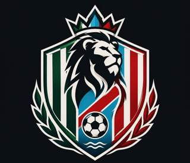

Técnica y juego
Control, pase, conducción, definición y toma de decisiones en situaciones de juego, según tu etapa y nivel.
Fútbol para chicos desde los 6 años, jóvenes y adultos. Entrenamientos adaptados a tu edad, nivel y objetivos, con trabajo técnico, preparación física y seguimiento de tu progreso.

Entrenar. Observar. Acompañar.
En Campus LQ buscamos crear una actividad deportiva estable, integrar familias y generar valores. Con Hambre de Gloria organizamos entrenamientos grupales, personalizados, y seguimiento deportivo.
Control, pase, conducción, definición y toma de decisiones en situaciones de juego, según tu etapa y nivel.
Observaciones por entrenamiento, aspectos para corregir y próximos objetivos. Un registro para acompañar tu evolución.
Devoluciones para el alumno y, cuando es menor, para su familia. Sugerencias concretas para seguir trabajando.
Grupos por edad y nivel para que cada alumno encuentre un entrenamiento acorde a sus objetivos.
| Etapa | Edad | Trabajo principal |
|---|---|---|
| Inicial | 6 a 9 años | Coordinación, juegos, pase y conducción. |
| Infantil | 10 a 12 años | Control, pase, conducción y situaciones de 1 contra 1. |
| Juvenil | 13 a 17 años | Técnica, preparación física y toma de decisiones. |
| Adultos | 18 años en adelante | Técnica, condición física y situaciones de juego. |
| Femenino | A elección | Técnica, definición y juego en equipo, con actividades adaptadas al nivel. |
Jugador de fútbol con experiencia profesional en Argentina e Italia y experiencia como entrenador de fútbol femenino y escuelas de fútbol infantil. Actualmente inscripto en la Escuela de Directores Técnicos N.° 42 – Oficial AFA.
Orientado al desarrollo deportivo de niños, adolescentes y adultos, con capacidad para planificar entrenamientos, coordinar grupos y adaptar las actividades según edades y niveles. Responsable, organizado y con experiencia dentro del ámbito competitivo y formativo del fútbol.
Conocer la propuestaCombiná entrenamiento grupal y sesiones personalizadas según tus objetivos. Consultá el valor vigente y los cupos antes de inscribirte. Si ya jugás en un club, inferiores o reserva, contanos tu puesto y qué querés mejorar para orientar el trabajo.
2 entrenamientos grupales por semana.
Consultar este plan1 entrenamiento grupal + 1 sesión personalizada por semana.
Consultar este plan2 sesiones personalizadas por semana.
Consultar este plan2 entrenamientos grupales + 2 sesiones personalizadas por semana.
Consultar este planPrecios de referencia en pesos argentinos para modalidad mensual. Confirmá el importe vigente, la duración de cada sesión y si el trabajo personalizado es individual o en grupo reducido. Medios de pago: efectivo o transferencia.
Consultá al inscribirte las condiciones de recuperación de clases suspendidas por lluvia u otras causas.
Grilla de referencia. Confirmá horarios, grupo y disponibilidad por WhatsApp antes de acercarte.
Contanos tu edad, si ya jugás al fútbol y qué querés mejorar. Te orientamos sobre el grupo o plan adecuado.